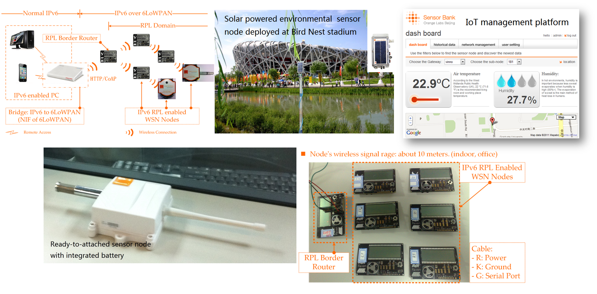
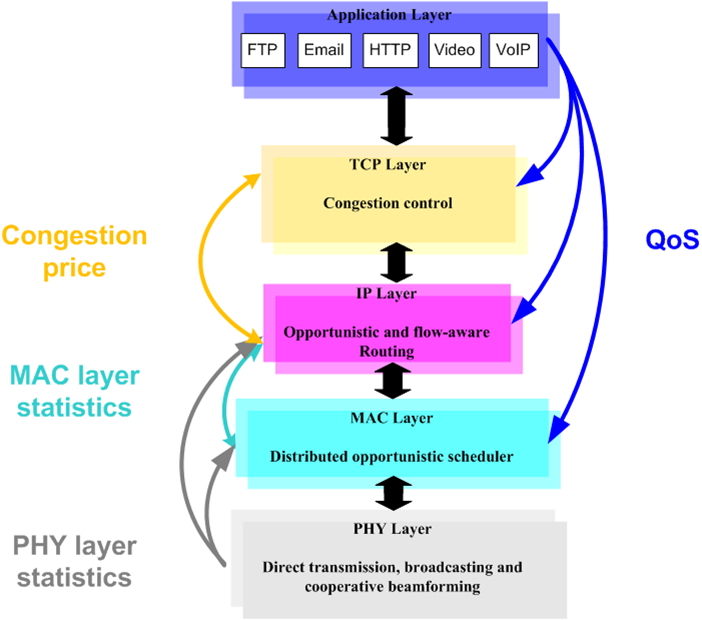

Wireless robotic teleoperation system for remote physical therapy (2022 @Sussex)
The focus is to disrupt the occupational therapy and assistant solution by introducing a wireless robotic teleoperation system. The proposed robotic system enables remote physical therapy without real physical contacts between the therapist and user (or patient).
IoT application for biodiversity monitoring using acoustic sounds (2019 @Sussex)
A new application of wireless acoustic sensor networks in remote monitoring.
Apply lightweigt IoT protocol stack (6lowpan/RPL/CoAP) and edge computing to minimize data transmission.
World Intelligent Driving Challenge (WIDC) (2018 @Sussex)
Sussex team joining with Beihang University to attend the World Intelligent Driving Challenge (WIDC) 2018 in Tianjin, China.
Sussex team contributed to the front camera sensing and line scanning.
The collaboration is sponsored by Royal Society International Exchange.
V2I ccommunication system (2018 @Sussex)
Implementation of vehicle-to-infrastructure (V2I) communications between cars and traffic light
V2I communications based on IEEE 802.11p
Vehicle to smart phone communication based on Bluetooth
Intelligent car development system (2018 @Sussex, NXP)
Car model platform based on NXP automotive MCU
Intelligent car tracking algorithm applied on line scanner sensors
Centralized control and optimization of motor, steering servo and sensing systems.
Large scale simulation for IoT (2016 @Sussex, BUPT)
Implementation of full IPv6 protocol stack (6LowPAN/IPv6/RPL/CoAP)
Up to 500 nodes in a single network
Routing objective functions: Hop, ETX, RSSI-ETX
Connected vehicles in smart cities (2016 @Sussex)
Connectivity between vehicles using DSRC (IEEE 802.11p)
Periodic broadcasting of Safety Messages
Applications in public safety services, including emergency vehicles/ambulance transport
Large scale simulation in the City of Brighton
Best Demo Award, 3rd place, IEEE SECON 2016
Intelligent sensor data and mobile cloud integration for context awareness vehicular applications (2014 @UBC)
What's this? A mobile application that integrates both motion detection sensor and OBD data to help drivers to combat fatigue and negative emotions during driving.
Techniques at-a-glance:
SQLite database and lightweight ontology computation methods for storing and interpreting the integrated sensor data and mobile devices.
RESTful web service, Apache ODE, JBoss jBPM and a series of open source packages for running the cloud platform to achieve efficient communication and computation with mobile devices.
Download Andriod Application and enjoy!
Viewers from mainland China can refer the video from here.
MAC Protocol Design for Vehicular Power Line Communication (VPLC) (2014-Now @UBC)
Motivation: In a car, the number of “intelligent” sensors, computers and electronic control unit (ECU), is continuously increasing. Increase the number of dedicated wires, cables, shielded cables. Weight, cost and reliability (connectors). Question: Why putting an additional cable between two ECUs for exchanging data since there are already connected to the DC power line.
Our solution: Use the DC PL as a physical support for the transmission. Thanks to the development of X-by-wire technique (replacing mechanical transmission by data transmission).
Viewers from mainland China can refer the video from here.
Surfing the Internet-of-Things (2011-Now @Orange, UBC)
Motivation: To revolutionize the design of Internet-of-Things (IoT) and enable universal connectivity and management to resource constrained devices, it is advantageous to develop lightweight radio and IPv6 protocol stack for sensor networks and thus bring more value-added services into our smart plans.
What is it? A full IPv6 solution to realize easy access from a smart phone or PC to a sensor device via home gateway. Restful interface for data access: Software development on OpenWRT firmware of gateway to realize HTTP/CoAP proxy for remote RESTful access.

Big data analysis in social networks (2012 @Orange)
Motivation: Visualize urban mobility combined with different industries: mapping population, transportation, environment, telecommunication, and social data to facilitate interdisciplinary research and communication for city operators and urban planners, leading to collaborative innovation in city development and service improvement.
Scale of data: 18 hours SMS volume, Over 10000 base stations in Beijing.
Copyright by Orange.
Cross-layer design of wireless cooperative communications (2011@Imperial College, IBM)

Viewers from mainland China can refer the video from here.